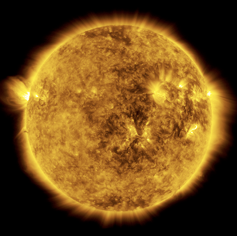

You can click here to replay the Session 3 tutorial later if you need a refresher on this content.
Back
Finish

Stars are too far away (and too hot!) for a human to touch, yet we can measure their temperatures. Spectra make this possible! Let’s investigate how.
Follow this tutorial which will recap some concepts you learned yesterday and share new ideas.
Answer questions 1-3 in the Session 3 Tutorial section of your Spectrum Notebook:
Color and Temperature
Answer the following questions in Challenge 1 of your Spectrum Notebook:
Return to instructor-led slideshow for a class-wide discussion on spectra and color.
After the discussion, continue to Challenge 2.
Spectra and Temperature
This is a spectrum of our Sun.
Note the following in the table for Challenge 2, Part I of your Spectrum Notebook:
Return to instructor-led slideshow for a class-wide discussion on Thermal Emission.
After the discussion, continue to Part II
Measuring star temperatures
Top Panel: Recall this spectrum of the Sun.
Bottom panel: Multiple thermal spectra models for different temperatures (in Kelvins).
Return to the table in Challenge 2, Part I of your Spectrum Notebook:
Note: The y-values of these model spectra are not plotted on the same scale—they have been modified so they can all be plotted in the range of the tool. The key is to compare the overall shape of the curves, and most importantly, where the peaks are.
How hot is an incandescent light bulb?
Top panel: The spectrum of an incandescent light bulb (where a metal filament is heated to such a high temperature that it glows).
Bottom panel: Multiple thermal spectra models for different temperatures (in Kelvins).
Write your answers in Challenge 3 of your Spectrum Notebook.
What is Earth’s temperature?
Top panel: The spectrum of Earth’s emission as measured from space.
Bottom panel: Multiple thermal spectra models for different temperatures (in Kelvins).
Write your answers in Challenge 4 of your Spectrum Notebook.
Nice work!
Check back in with your instructor for an end of class discussion.

More Light
Wavelength (Microns)